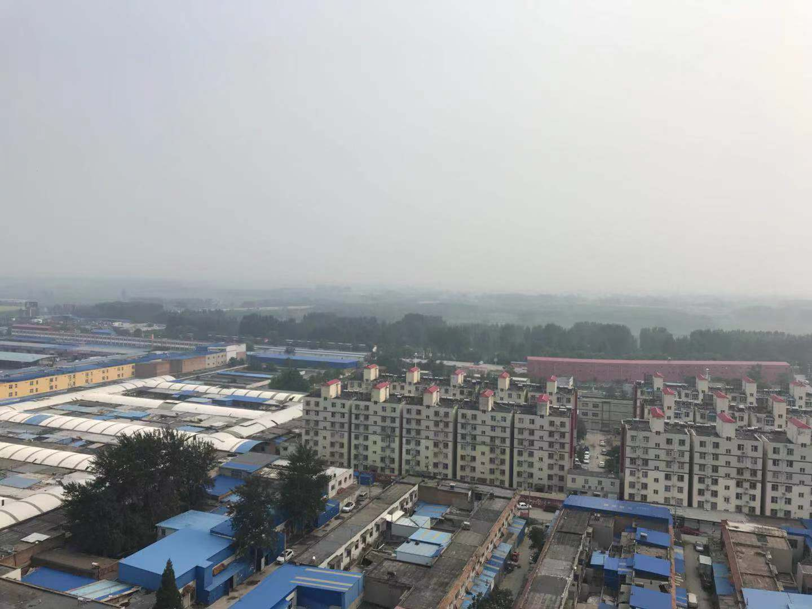
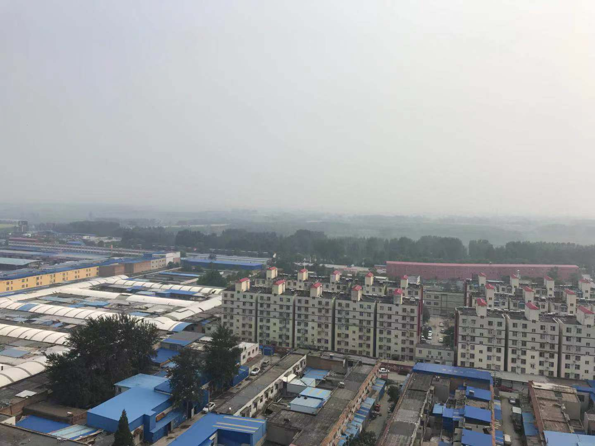

CHEN'S BLOG.
Beautiful scenery in the 20th floor.
Entry Dec.1 2022 by Admin.
My first game by pygame.
Entry Dec.2 2022 by Admin.
The second day after the important test.
Working for the group task -- A presentation about BOEING.
Entry Apr.30 2023 by Admin.
Unfortunately, I missed the time for dinner, so I had to went a long distance to enjoy a meal.
It is not that difficult to say that I suffered through starvation...
But what really made sense is that such experience is not a good one.
Entry Apr.30 2023 by Admin.
Learning that Mr.Bean is going to leave tomorrow. I believe that instead of feelling pity for his departure, what I really need to do is to
wish him a good journey.
However, I still doubt whether this is a true story or not. He hasn't finished his curriculum.
Entry Apr.30 2023 by Admin.
It is always satisfactory to finish a project. Today is a sunny day. Wish everything to be fine.
Everything is going to be much better.
Want to play the piano. However, no access.
Entry Apr.30 2023 by Admin.
Drawing a Olympics Circle using python turtle.
Entry Apr.30 2023 by Admin.
Having no idea which university to apply for.
For some universities, the requirment for postgraduate program is really high, while for others, the requirment can be quite low.
It is always uneasy to find an appropriate program & a country.
Entry Apr.30 2023 by Admin.
Why there are so many mosquitoes!
Entry Apr.30 2023 by Admin.
Another hard-working day. Struggling for my speaking test.
Entry May.1 2023 by Admin.
The end of the IELTS test.
Entry May.2 2023 by Admin.
IELTS test finished, however difficult it is, it is an unforgetable experience. There are really so many things to recall. From the beginning of Apr.29, a rainy morning, I got up really early in the morning, with a little bit headache, I caught up the underground to the NBU.
When I arrieved, my shoes were wet and I had to queue up for taking picture and fingerprint collection. After that, I entered the exam room, waiting for papers to be released.
The listening part 3 of the test was really hard to answer as the speed of recording was REALLY fast, which made me unable to catch up with it. And also, the writing section, in which I felt nervous and panic.
Today marks the end of the whole test as the finish of speaking part.
HOPE EVERYTHING BE FINE & SATISFACTORY REPORT BE RELEASED.
Entry May.2 2023 by Admin.
I feel exhausted after finishing ppt for the presentation on Friday.
I haven't had lunch today, so I plan to go out for dinner now.
Seems as if it is going to rain soon.
Entry May.3 2023 by Admin.
Ready to go now.
Entry May.3 2023 by Admin.
Finding some delightful things such as to create a website or to enjoy a hearty meal is really important in daily life as there are always a lot of things niggling everyone. For me, in the past five days, I have finished a lot of tasks. I feel now satisfied enough, even though I have no idea what the result will be. I can announce that the turning point is approaching now.
Entry May.3 2023 by Admin.
Working for the thesis of metaphor translation for a whole afternoon, just after presentation whose topic is Boeing in the morning.
Worrying about my IELTS result. However, I know it is useless as the examination has already finished. Wish good news in next week.
Entry May.5 2023 by Admin.
The weather and temperature vary in such a great extent. Today is hot and damp, while according to the weather forcast, the day after tomorrow will be really cool.
Entry May.5 2023 by Admin.
A busy Saturday. Have my thesis finished(more than 1,500 words in total).
Entry May.6 2023 by Admin.
Waiting for the results of my IELTS test, which is scheduled to be released tomorrow at noon.
Feeling upset and anxious in the process of waiting. I believe that everyone will feel the same when waiting for a certain important thing.
Entry May.11 2023 by Admin.
The thing is that I hope that the overall score can reach 7.0, so that I can be qualified and be comfident to apply for my preferred universities or programs.
What I am worrying about at present is that I can only make it to 6.5, even though most people find this result enough...
I NEED A SEVEN AND I WILL GET A SEVEN.
Entry May.11 2023 by Admin.
Important Notice
We are sorry to announce that due to some technique problems.
Website:jones-diary.herokuapp.com is no longer in use.
Since December 1st 2022, all the important messages will be released through this site.
Copy the contents and make some changes.
DESIGN BY JONES CHEN in 2023.

 
